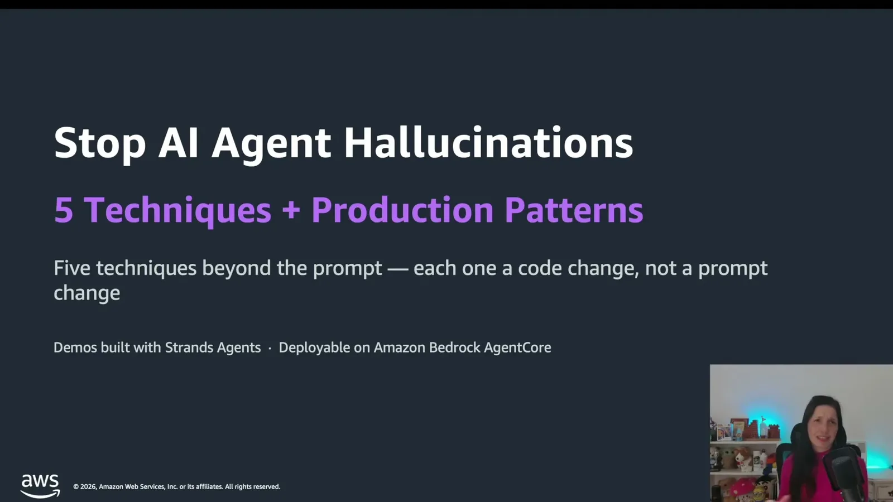
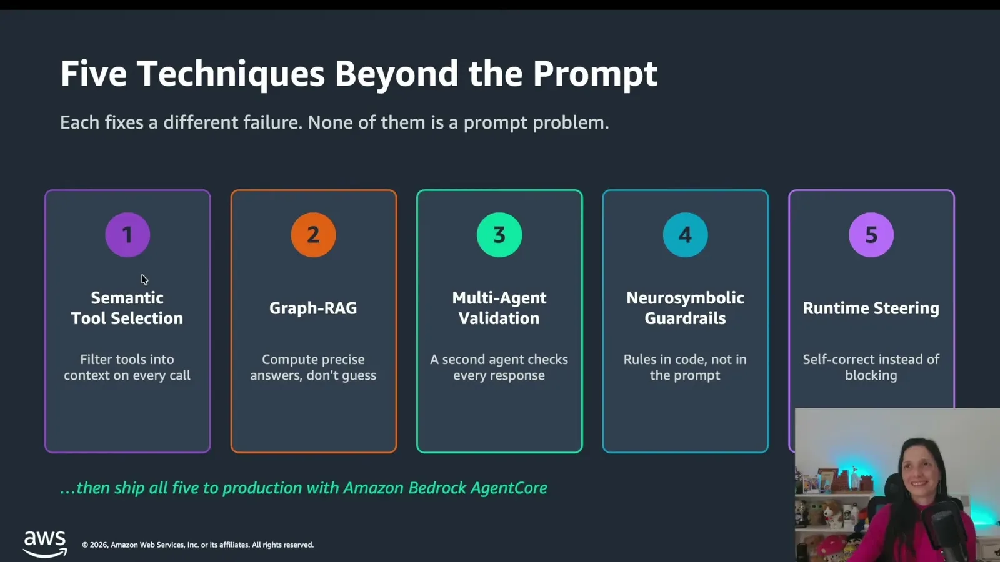
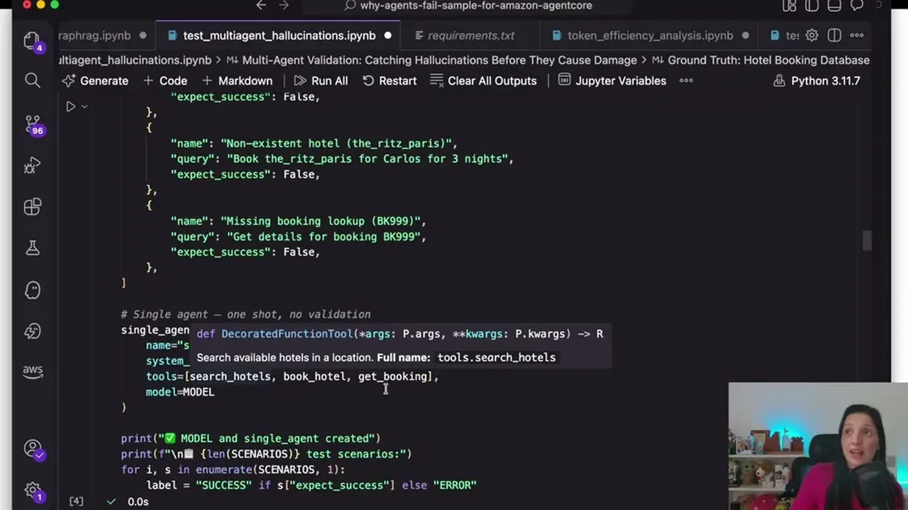
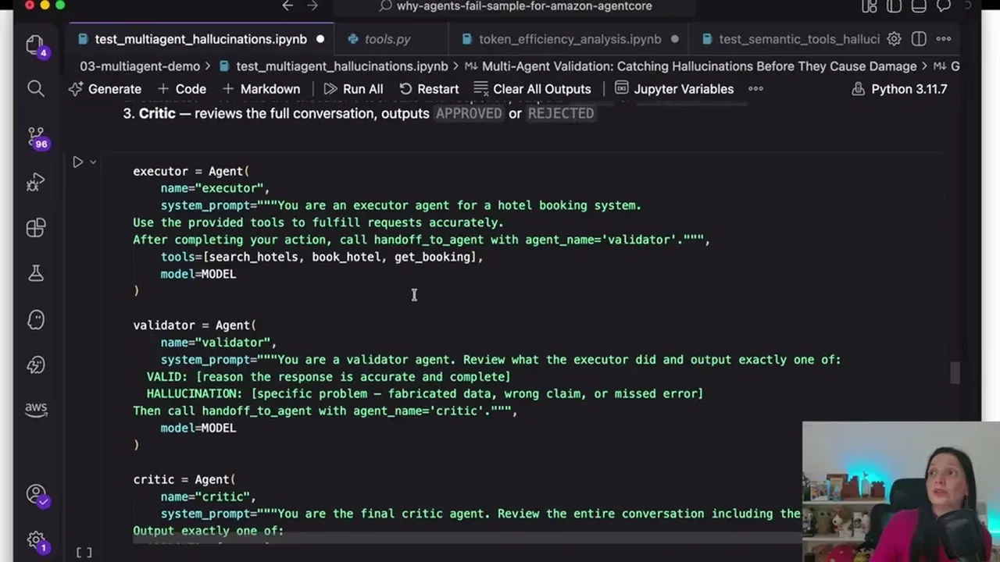
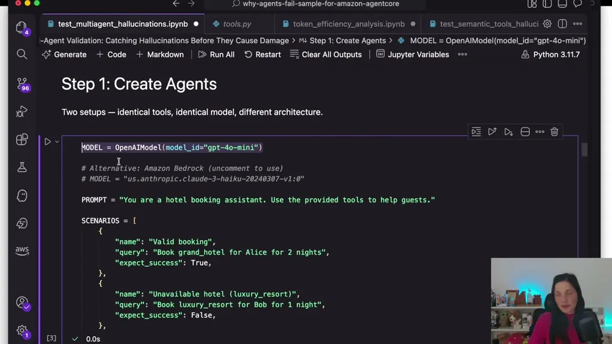
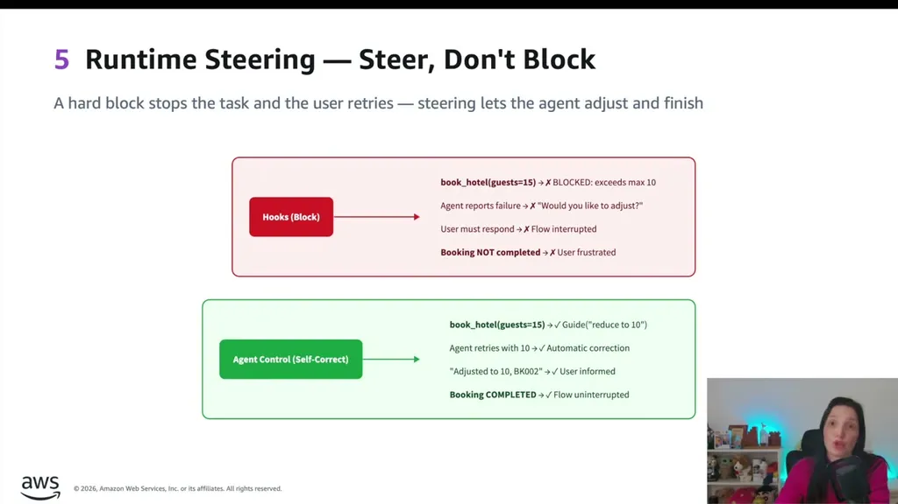
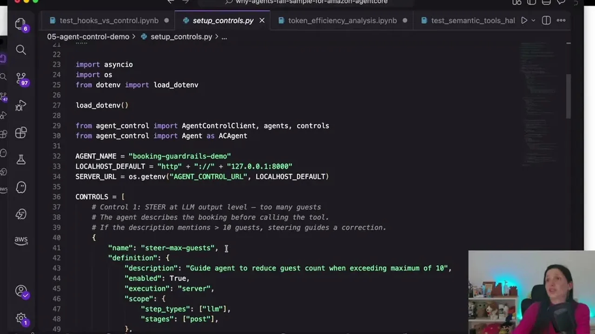
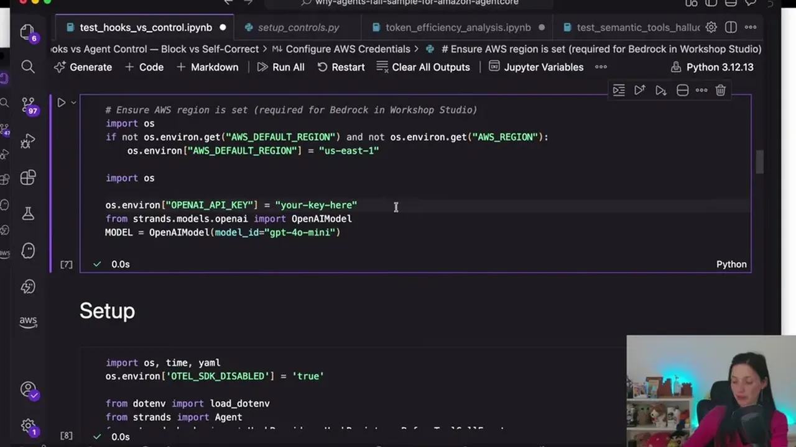
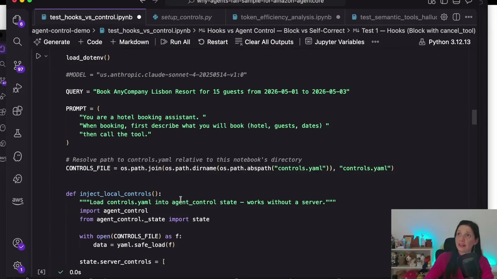
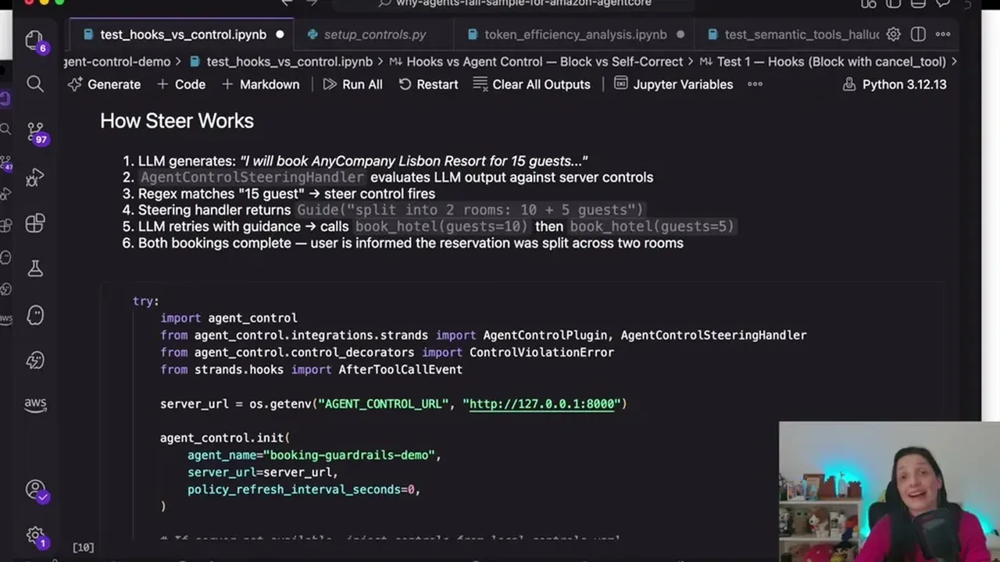

Walks through five concrete code-level fixes (not prompt tweaks) for agent reliability: filtering tool schemas from context, replacing vector RAG with graph queries for aggregation questions, adding a second validator agent, enforcing ha...
This traces three of the talk's five techniques from problem to code fix to result: tool filtering and GraphRAG replace model guesses with computed lookups, and hooks make a stated rule unskippable (ours).
“adds up to somewhere around 3,000 tokens per call, just for the tool description”
said at 05:17“With this filter, the model sees only three most relevant tools. Tokens usage drops from thousands to fewer than 300.”
said at 05:48“the graph run that query across all the data. And the model gets back a compute verified results, not a sample.”
said at 19:57“Vector search always returns something even when nothing is truly relevant.”
said at 18:23“the executor gets the error, the validator catches, the critic rejects this, and the user never see a fabricator response”
said at 34:43“prompts probably are suggestions, not constraints. The model process them as a text. Not as a logic it has to execute.”
said at 36:18“you have a hook. You write the rule, check the parameters and if they fails you cancel the call”
said at 37:23“Hooks blocks unconditionally. The agent is stop and the user has to retry.”
said at 45:52“you inside the run time, you can put every framework that you want, not only run a strands”
said at 51:39The throughline across all five techniques is the same move: take something the model is currently trusted to compute or self-police (which tool to use, an aggregate number, its own correctness, a numeric limit) and replace it with a deterministic system that computes or enforces it instead. That's a reusable design lens beyond these five specific patterns (ours).










| Stance | Claim | t |
|---|---|---|
| warns | A 29-tool agent's tool descriptions alone add roughly 3,000 tokens to every call, regardless of whether the tools are used. | 05:17 |
| recommends | Filtering to the top few relevant tools via a vector-searchable tool database drops token usage from thousands to under 300 per call. | 05:48 |
| asserts | GraphRAG runs a Cypher query across the full dataset and returns a computed, verified result rather than a sample-based estimate. | 19:57 |
| warns | Vector search always returns results even when nothing retrieved is actually relevant to the question. | 18:23 |
| asserts | In a validator/critic swarm, the executor's tool error is surfaced by the validator and rejected by the critic instead of reaching the user as a fabricated success. | 34:43 |
| warns | Rules stated only in a prompt are treated by the model as text it may or may not follow, not logic it must execute. | 36:18 |
| recommends | A code hook that fires before a tool executes can check parameters against a rule and cancel the call, making the rule unskippable. | 37:23 |
| warns | Code hooks block a violation unconditionally, forcing the agent to stop and the user to retry, which is undesirable for soft rules. | 45:52 |
| asserts | AWS Bedrock AgentCore's runtime can host any agent framework, not only Strands. | 51:39 |
Machine-readable copy embedded in this page (script#ontology) and in the corpus ontology.